|
上海图文日记2006
2006年8月8日
今天早上6点多就起来了，到上海的第一次嘿。7点半就到了豫园，可是这里8点半才开张。我只好先在附近的弄堂转了一圈。太阳比我起得更早，8点半进豫园的时候阳光已经很猛烈，极其不适合拍摄园林。
参观豫园之后我按照2003年版Lonely Planet的walking
tour的指导走一下老弄堂。没想到书上面的不少弄堂已经不复存在了。我在一个弄堂杂货店买水喝，顺便采访了弄堂人家。
赵秀英大妈住在上海昼锦路132号，家里的客厅也是一个小小杂货店。赵大妈从上个世纪70年代就住在这里了。房子只有不到20平方米。据说这个弄堂在解放前就存在，具体多少年这里的人也说不清楚。赵大妈的儿子高剑元先生自己在浦东租了一套两房一厅，每个月1700元。豫园旁边的很多弄堂都即将被拆除，赵大妈所在的昼锦路2006年底之后也将不复存在。拆迁补偿是每人25万元，这在上海市区大约只能买到20平方米的面积。
8 Aug 2006
For the first time in shanghai i got up at 6am, reached the famous
Yuyuan garden at 7:30. Nobody answered the door. By 8:30am i got into Yuyuan, the sunlight was already
too harsh for garden photography.
I visited a few alleys near Yuyuan, guided by the walking tours of
Lonely Planet Shanghai (2003). To my surprise many of the street lanes
in this 2003 book were no longer in existence. I bought a couple of cold
drinks and visited the shop owner, Aunt Zhao family.
Aunt Zhao has been living in #132 of Zhou-Jing Rd near Yuyuan garden
since 1970s. This alley, Zhou Jing road, has been in existence long
before the 1949 Liberation. Mr Gao Jianyuan, son of Aunt Zhao, lives in
a rented 3 room apartment in Pudong with a monthly rental of RMB1,700.
The entire Zhou Jing Rd will be giving way to high rise buildings by the
end of 2006. Compensation will be 250,000 per head, equivalent to the
price of 20 square meters living space, according to the current real
estate pricing in shanghai.
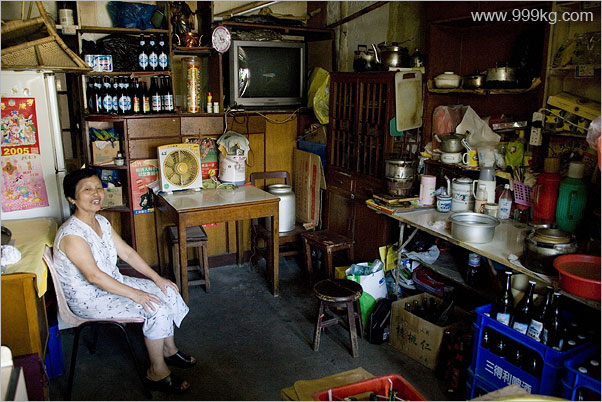
访问弄堂人家。照片号：shanghai808H.
visiting alley family. Photo ID: shanghai808H.
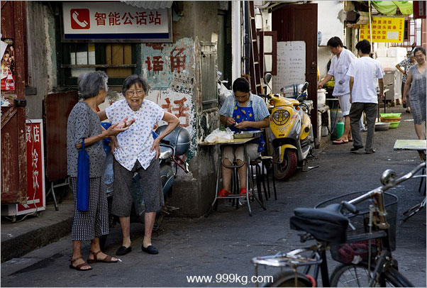
上海弄堂的早上。图片编号：shanghai808A.
Morning talk, shanghai alleys. Photo ID:
shanghai808A.
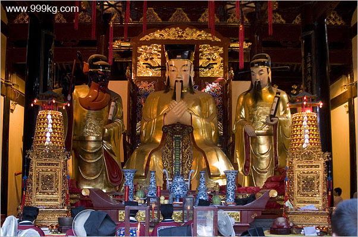
上海城隍庙道观。图片编号：shanghai808B.
shanghai cheng-huang-miao daoist temple. Photo ID:
shanghai808B.
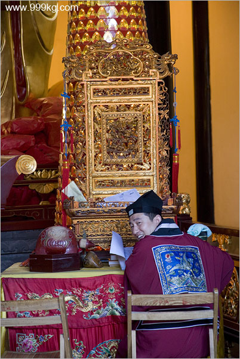
上海城隍庙道士。图片编号：shanghai808C.
shanghai cheng-huang-miao daoist. Photo ID:
shanghai808C.
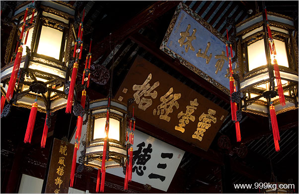
上海豫园三穗堂。图片编号：shanghai808C.
San-sui Tang, shanghai Yuyuan Garden. Photo ID:
shanghai808C.
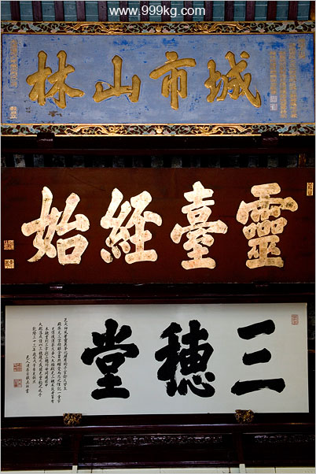
上海豫园三穗堂。图片编号：shanghai808D.
San-sui Tang, shanghai Yuyuan Garden. Photo ID:
shanghai808D.
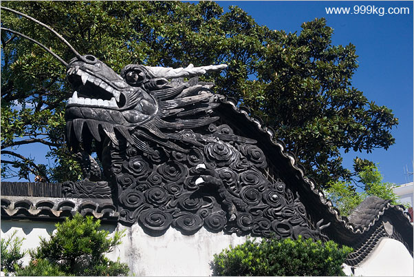
上海豫园围墙的龙。图片编号：shanghai808E.
Dragon wall, shanghai Yuyuan Garden. Photo ID:
shanghai808E.
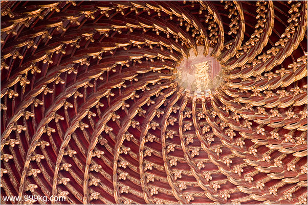
上海豫园戏台的屋顶。图片编号：shanghai808F.
Roof of shanghai Yuyuan Garden stage. Photo ID:
shanghai808F.
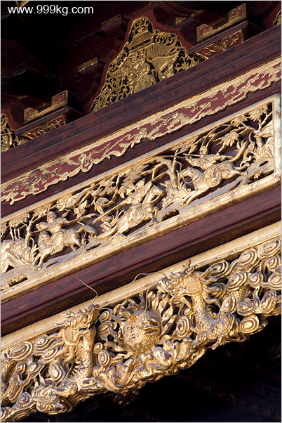
上海豫园戏台局部。图片编号：shanghai808G.
shanghai Yuyuan Garden stage. Photo ID:
shanghai808G.
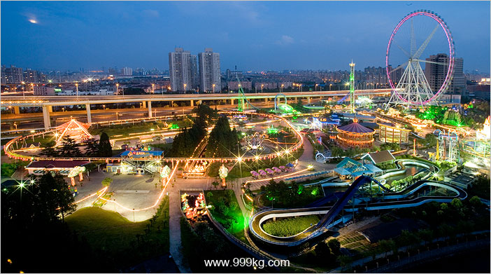
上海锦江乐园。图片编号：shanghai808I.
The Jinjiang Park. Photo ID: 808I.
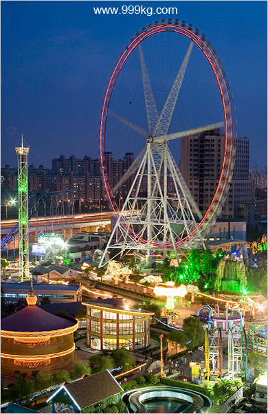
上海锦江乐园108米摩天轮。图片编号：shanghai808J.
The Jinjiang Park. Photo ID: 808J.
|